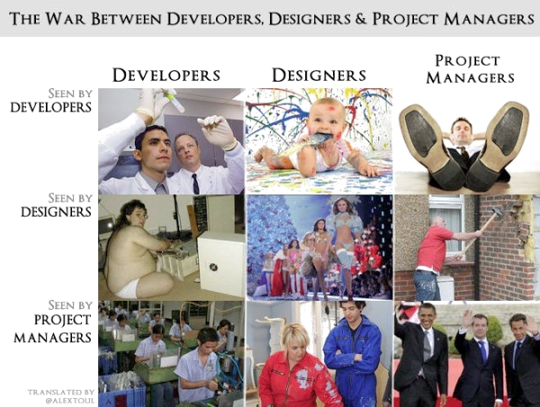

*Making Ideas Tangible*
- The Dev TeamThe players an introduction

how do they work together?
Developers - The ones who make things work.
These guys know what's up. They take the ideas of the clients and users and turn them into a reality. They do all the backend nonsense that takes a pretty webpage and makes it function like a well oiled machine.
Designers - The ones who make things pretty
The designers are responsible for all the graphical assets of a webpage as well as creating the basic html markup and css stylesheets. They shape their ideas around the needs of the client. They often have to make multiple revisions to the graphical assets in order to please the clients and project managers.
Project Managers - The ones who make sure it's done right.
The project managers oversee all aspects of the development process. They make sure the developers are doing their jobs correctly and in a manner that agrees with the project time constraints. They serve as the middleman between the clients and the people who are creating the application.
The What

The development process begins with an idea proposed by a client. The idea is then built out into a set of creative and functional requirements in a meeting between clients and development team members.
Once a list of requirements has been established, the resulting ideas are then passed along to the designers. The designers often create a few different mach-ups of the same web page to present to the project managers. These prototype pages consist of the design and the basic scripts that will hold the page together in your web browser.
Once a design is approved it is then passed along to the dev crew. The dev crew is responsible for making all the things work. They handle the code for all the intermediary authentication and controllers that control the flow of all the data
stuff here?
one more thing...
have you noticed it's in 3D*?
* beat that, prezi ;)